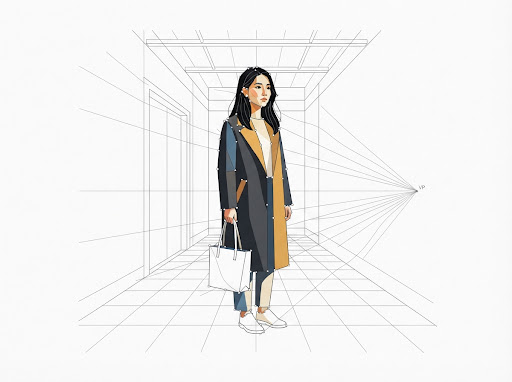
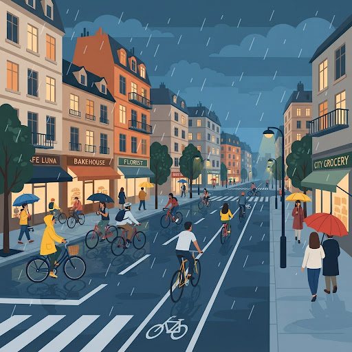
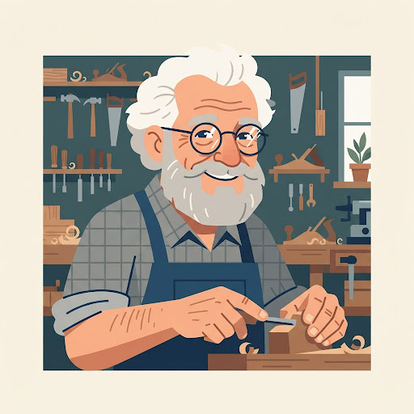
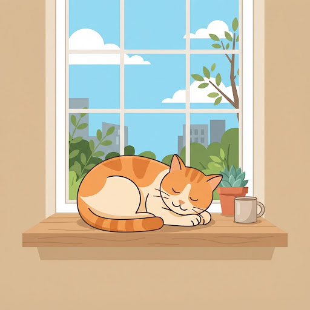

矢量绘图画布
|
1200 × 896 PT
矢量解析中 · 实时分层渲染
+
+
+
+
LAYER #24 · PATH: POLYGON_TRACED
ORIGIN [0, 0] · BEZIER ACTIVE

00:42 / 01:30
已绘制 128,430 / 172,471 笔
进度 74.5% · 算法迭代：第 14 轮
生成历史
共 4 条记录
雨中街景
3 天前
1,240 路径

木工匠人
5 天前
3,420 路径

窗台橘猫
上周
860 路径
一期一会茶室
2 周前
2,890 路径